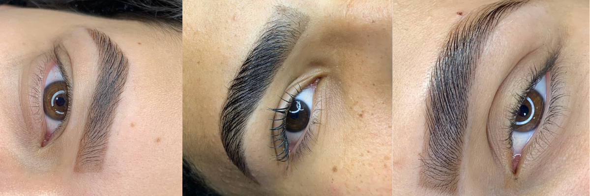
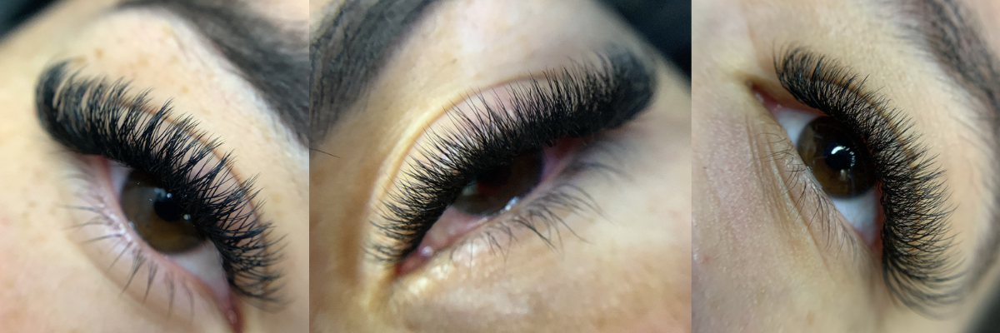

.png)


A extensão de cílios volume brasileiro é uma técnica que se destaca por criar um efeito de volume intenso e natural. Ela utiliza fios leves e finos, que são aplicados em grupos (geralmente de 2 a 6 fios por cílio natural), resultando em um look cheio e espesso, mas ainda assim suave. Essa técnica é popular por proporcionar um olhar marcante, realçando a beleza dos olhos sem parecer exagerado. Além disso, o efeito é bastante durável e pode ser adaptado para diferentes estilos, desde os mais discretos até os mais dramáticos. É uma excelente opção para quem busca volume e intensidade no olhar.
Veja as marcas de cíliosA extensão de cílios 5D é uma técnica ainda mais avançada que a 3D, proporcionando um volume ainda maior e um efeito mais dramático. Nessa abordagem, múltiplos cílios são aplicados em cada fio natural, criando um look cheio e volumoso. Os cílios 5D são geralmente mais finos e leves, o que permite uma aplicação segura e confortável, sem danificar os cílios naturais. Essa técnica é ideal para quem deseja um olhar intenso e marcante, perfeito para ocasiões especiais ou para o dia a dia, dependendo do estilo desejado.
Veja as marcas de cíliosA extensão de cílios 4D é uma técnica intermediária entre as extensões 3D e 5D, que cria um efeito de volume e definição nos cílios. Nela, são aplicados de 4 a 6 fios finos em cada cílio natural, proporcionando um look cheio e dramático, mas ainda assim leve. Essa técnica permite um resultado bem natural, mas com mais intensidade do que as extensões tradicionais. É ideal para quem deseja um olhar mais impactante, mantendo a leveza e conforto, e pode ser adaptada para diferentes estilos e ocasiões.
Veja as marcas de cílios